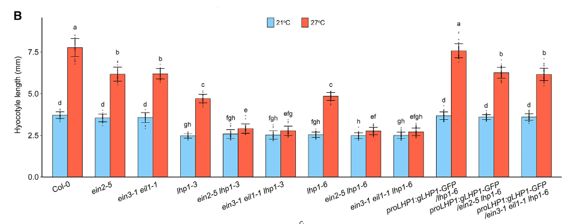
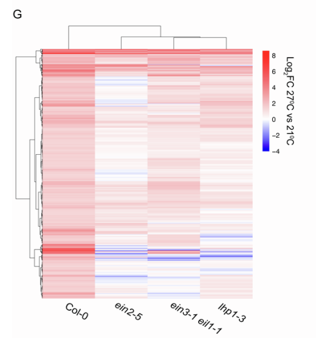
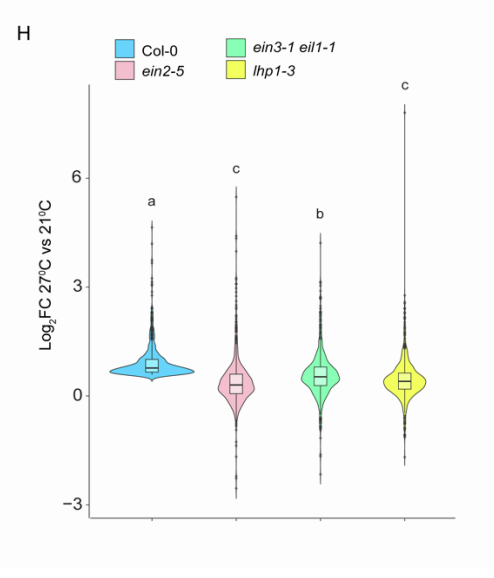
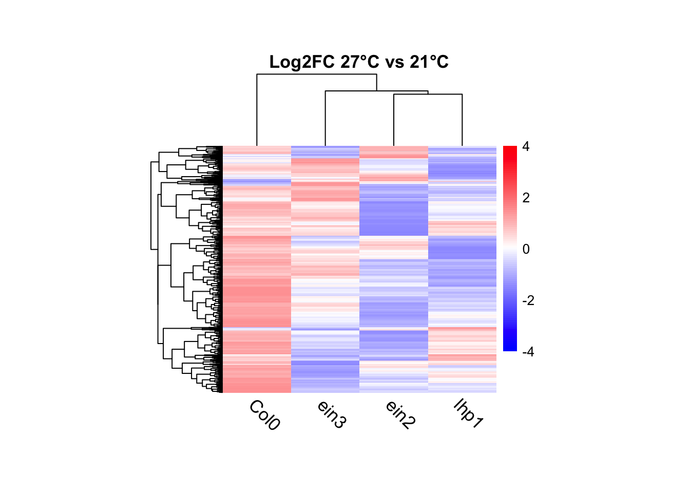

The paper “LHP1 and INO80 cooperate with ethylene signaling for warm ambient temperature response by activating specific bivalent genes” by Shao et al. 2024 demonstrate the involement of ethylene signaling in ambient temperature response in plant using model of Arabidopsis thaliana. In brief, ethylene signaling key factors/ protein EIN2 and EIN3 collaborate with 2 proteins LHP1 and INO80 to alter chromatin bivalency of H3K4me3 and H3K27me3, resulting in transcriptional activation in response to warm temperature.
In the paper, authors studied phenotype, m-RNA expression level, protein interaction and methylate histone level of different single mutant lines (ein2-5, ein3-1eil1-1, lhp1, ino80) and higher order (ex: ein2-5lhp1-6) compared with wildtype (Col-0) to determine relationship of ethylene signaling factors and other heat response factors. Main techniques includes: temperature response assay, pull-down assay, Y2H hybrid assay, RNA extraction, RNA sequencing, ChiP-sequencing.
In my assignment, I replicated data below: 1. Phenotype measurement (presented in Figure 1B): descriptive statistical analysis, two-tailed ANOVA and posthoc Tukey HSD are performed to identify hypocotyl length characteristic of mutants plant and compare among experimental groups of plant. Data is visualized using bar chart. 2. RNA-seq data (using for figure S1G and S1H): statistical analysis, two-paired t-test are performed to identify and compare gene expression pattern among experimental groups of plant. Data is visualized using heatmap and violin plot.
Notes: Original paper doesn’t include any descriptive data for phenotype. However, I still performed descriptive statistical analysis for hypocotyl length measurement and use them for comparision.
Visualization of data
#Loading all packageslibrary(tidyverse)
── Attaching core tidyverse packages ──────────────────────── tidyverse 2.0.0 ──
✔ dplyr 1.1.4 ✔ readr 2.1.5
✔ forcats 1.0.0 ✔ stringr 1.5.1
✔ ggplot2 3.5.1 ✔ tibble 3.2.1
✔ lubridate 1.9.4 ✔ tidyr 1.3.1
✔ purrr 1.0.2
── Conflicts ────────────────────────────────────────── tidyverse_conflicts() ──
✖ dplyr::filter() masks stats::filter()
✖ dplyr::lag() masks stats::lag()
ℹ Use the conflicted package (<http://conflicted.r-lib.org/>) to force all conflicts to become errors
library(multcomp)
Loading required package: mvtnorm
Loading required package: survival
Loading required package: TH.data
Loading required package: MASS
Attaching package: 'MASS'
The following object is masked from 'package:dplyr':
select
Attaching package: 'TH.data'
The following object is masked from 'package:MASS':
geyser
# Loading the fisrt data set: temperature response phenotype of mutantsf1 <-"https://raw.githubusercontent.com/yendo3877/data-analysis-replication/refs/heads/main/data/2228_hypo3_lhp1.csv"d1 <-read.csv(f1, header =TRUE)glimpse(d1)
First data set includes measurement data of hypocotyl (in mm) of 11 type of mutants and wildtype (Col-0) in 2 temperature treatment: 22 and 28°C. By observing change in hypocotyl length, author can demonstrate thermosensibility of mutants compared to wildtype.
#Loading the second data set: RNA-seq of different mutants f2 <-"https://raw.githubusercontent.com/yendo3877/data-analysis-replication/refs/heads/main/data/GSE256453_diff_wt_27vs21.csv"d2 <-read.csv(f2, header =TRUE)glimpse(d2)
Second data set comprises RNA-seq differential gene expression results from Arabidopsis thaliana under warm-ambient temperature conditions (27°C vs. 21°C) across four genotypes: Col-0 (wild-type), ein2-5 (ethylene signaling mutant), ein3-1 eil1-1, lhp1-3 (chromatin silencing mutant). The dataset includes: Gene identifiers (X), \(log_2\) fold change (27°C vs. 21°C), Standard errors, p-values and adjusted p-values.
Original images
knitr::include_graphics("images/figure-01-b.png")

knitr::include_graphics("images/figure-s1-g.png")

knitr::include_graphics("images/figure-s1-h.png")

2. Data analysis and Visualization Replication
2.1. Phenotype analysis
First, I renamed variances in dataset to match with published paper and converted genotype and temperature to factors for statistical analysis and ploting. I also grouped genotype and temperature to groups.
As the dataset contains 12 genotypes and 2 temperature treatment, after grouping, I got 24 groups of data that I will perform descriptive statistical analysis.
In the published paper, authors mentions about the difference between after and before temperature treatments of different genotype. Here, I conducted descriptive statistical analysis by caculating mean and se (standard error), and using box-plot for visualization.
At 27°C, Col-0 hypocotyls elongate from 3.72 mm to 7.77 mm. Mutants like ein2-5 (3.55 → 6.18 mm) and lhp1-3 (2.48 → 4.71 mm) show reduced elongation. Double/triple mutants such as ein2-5 lhp1-3 (2.58 → 2.91 mm) and ein3-1 eil1-1 lhp1-6 (2.51 → 2.72 mm) show minimal response. In contrast, proLHP1::gLHP1-GFP / lhp1-6 restores elongation (3.68 → 7.58 mm), demonstrating that LHP1 is sufficient to rescue thermomorphogenesis.
To see whether genotype or temperature significantly affect hypocotyl length, I performed two-tailed ANOVA, following by Tukey HSD test, to determine significance of data.
In two-tailed ANOVA, I want to see effect of (1) individual genotype or temperature on hypocotyl length (mm) and (2) groups of genotype and temperature on hypocotyl length (mm).
# ANOVAaov_result <-aov(Length ~ Genotype + Temp, data = d1)summary(aov_result)
aov_result2 <-aov(Length ~ Group, data = d1)summary(aov_result2)
Df Sum Sq Mean Sq F value Pr(>F)
Group 23 1824.4 79.32 1046 <2e-16 ***
Residuals 627 47.5 0.08
---
Signif. codes: 0 '***' 0.001 '**' 0.01 '*' 0.05 '.' 0.1 ' ' 1
Results: The first ANOVA revealed significant effects of genotype (F(11, 627) = 1068.1, p < 2e-16), and temperature (F(1, 627) = 8485.0, p< 2e-16) on hypocotyl length. These results indicate that both genetic background and growth temperature strongly influence hypocotyl elongation. The second ANOVA shows there is a highly significant effect of genotype-temperature combinations on hypocotyl length (ANOVA, F(23, 627) = 1046, p < 2e-16), indicating that interaction between genetic background and temperature strongly influence growth.
Then I peformed Tukey HSD test to answer question: “Which specific genotype-temperature groups are significantly different from each other?”
# Tukey HSD and compact letter displaytukey_result <-glht(aov_result2, linfct =mcp(Group ="Tukey"))letters_d1 <-cld(tukey_result)$mcletters$Letters
Warning in RET$pfunction("adjusted", ...): Completion with error > abseps
Warning in RET$pfunction("adjusted", ...): Completion with error > abseps
Warning in RET$pfunction("adjusted", ...): Completion with error > abseps
Warning in RET$pfunction("adjusted", ...): Completion with error > abseps
Warning in RET$pfunction("adjusted", ...): Completion with error > abseps
Warning in RET$pfunction("adjusted", ...): Completion with error > abseps
Warning in RET$pfunction("adjusted", ...): Completion with error > abseps
Warning in RET$pfunction("adjusted", ...): Completion with error > abseps
Warning in RET$pfunction("adjusted", ...): Completion with error > abseps
Warning in RET$pfunction("adjusted", ...): Completion with error > abseps
Warning in RET$pfunction("adjusted", ...): Completion with error > abseps
Warning in RET$pfunction("adjusted", ...): Completion with error > abseps
Warning in RET$pfunction("adjusted", ...): Completion with error > abseps
Warning in RET$pfunction("adjusted", ...): Completion with error > abseps
Warning in RET$pfunction("adjusted", ...): Completion with error > abseps
Warning in RET$pfunction("adjusted", ...): Completion with error > abseps
Warning in RET$pfunction("adjusted", ...): Completion with error > abseps
Warning in RET$pfunction("adjusted", ...): Completion with error > abseps
Warning in RET$pfunction("adjusted", ...): Completion with error > abseps
Warning in RET$pfunction("adjusted", ...): Completion with error > abseps
Warning in RET$pfunction("adjusted", ...): Completion with error > abseps
summary(letters_d1)
Length Class Mode
24 character character
Tukey HSD comparisons revealed that many genotype-temperature combinations differ significantly. For instance, lhp1-3, ein2-5 lhp1-3, and ein3-1 eil1-1 lhp1-3 mutants had significantly shorter hypocotyls than wild-type (wt) at 21°C (p < 0.01). Most genotypes showed significantly longer hypocotyls at 27°C compared to 21°C, indicating strong temperature responsiveness. However, some mutants (e.g. ein2-5 lhp1-3) showed less elongation, suggesting impaired thermoresponsive growth.
Conclusion: Warm temperature (27°C) significantly promotes hypocotyl elongation in wild-type (Col-0). However, mutants with disrupted ethylene signaling (ein2-5, ein3-1 eil1-1) or chromatin regulation (lhp1-3, lhp1-6) show impaired thermoresponsive elongation. Moreover, higher-order mutants exhibited almost no response to a warm ambient temperature (example: ein2-5 lhp1-3).
Complementary lines were created to validate the additive genetic function of LHP1 with EIN2 and EIN3 in the warm ambient temperature ambient response (with proLHP1::gLHP1-GFP). The phenotypes of lhp1-6, ein2-5 lhp1-6, and ein3-1 eil1-1 lhp1-6 were restored by proLHP1::gLHP1-GFP to that of Col-0, ein2-5, or ein3-1 eil1-1, respectively suggesting that LHP1 functions with EIN2 and EIN3/EIL1 additively in response to a warm ambient temperature.
2.2. RNA-seq analysis
In RNA-seq analysis, authors compared the transcriptomes of Col-0, ein2-5, ein3-1 eil1-1, and lhp1-3 with or without 4 h of 27C treatment (Figures S1G and S1H).
First, I extracted warm-induced up-regulate genes in Col-0 from dataset d2 and compared log2FC with all the mutants. To do so, I filtered genes using threshold as mentioned in paper method, then get log2FC of those gene from all the single mutants by create new function get_log2fc.
# up regulated genes threshold (padj < 0.05 and |log2FC| > 0.585)threshold <-0.585# Filter for warm-induced up regulated gene in wildtype - Col-0col_up <- d2 |>filter((log2FoldChange) > threshold, padj <0.05)# Extract log2FC from all genotypesget_log2fc <-function(genes, group_label) { df <-data.frame(Gene = genes$X) df$Col0 <- d2$log2FoldChange[match(df$Gene, d2$X)] df$ein2 <- d3$log2FoldChange[match(df$Gene, d3$X)] df$ein3 <- d4$log2FoldChange[match(df$Gene, d4$X)] df$lhp1 <- d5$log2FoldChange[match(df$Gene, d5$X)] df$Group <- group_labelreturn(df)}df_col_up <-get_log2fc(col_up, "col-up")
From 25656 genes of d2, I filtered 902 genes that are warm-induced up regulated. I can observed the log2FoldChange pattern of these 902 genes in Col-0 and all single mutants using clustered heatmap.
df_col_up$Group <-NULL# Drop the gene column and make sure all others are numericmat <- df_col_up |> dplyr::select(-Gene) |>mutate(across(everything(), as.numeric)) |>as.matrix()rownames(mat) <- df_col_up$gene# Scale each row (z-score normalization)col_up_matrix <-t(scale(t(as.matrix(mat))))# Plot heatmappheatmap(col_up_matrix,cluster_rows =TRUE,cluster_cols =TRUE,show_rownames =TRUE,fontsize =10,fontsize_row =0,fontsize_col =13,cellwidth =50, # width of each column (optional)cellheight =0.2, # height of each row — increase this to stretch verticallyangle_col =315,color =colorRampPalette(c("blue", "white", "red"))(100),breaks =seq(-4, 4, length.out =100),main ="Log2FC 27°C vs 21°C")

From the heatmap, the expression levels were reported (using log2FC data). Compared to Col-0, those up-regulated genes mostly have lower expression in mutants (more blue cells compared to lot of red cells in Col-0).However, some of the genes still show higher expression in mutants.
To firgure out whether all single mutants involve in same pathways or not, I filtered out genes pool that lower expression in mutants compared to Col-0 when exposed to warm-temperature.
# Drop the gene column and make sure all others are numericmat2 <- heatmap_filtered |> dplyr::select(-Gene) |>mutate(across(everything(), as.numeric)) |>as.matrix()rownames(mat2) <- heatmap_filtered$gene# Scale each row (z-score normalization)heat_matrix <-t(scale(t(as.matrix(mat2))))
In total of 902 genes up-regulated in Col-0, there are 610 genes that are lower expression in all 3 mutants (67.63%). Then, I can visualized these expression level of 610 genes using heatmap.
pheatmap(heat_matrix,cluster_rows =TRUE,cluster_cols =TRUE,show_rownames =TRUE,fontsize =8,fontsize_row =0,fontsize_col =12,cellwidth =50, # width of each column (optional)cellheight =0.35, # height of each row — increase this to stretch verticallyangle_col =315,color =colorRampPalette(c("blue", "white", "red"))(100),breaks =seq(-4, 4, length.out =100),main ="Log2FC 27°C vs 21°C")
The heatmap shows 610 genes have lower expression in all 3 types of mutants compared to Col-0.
Finally, I checked for significant difference in gene pool contain 902 genes that up-regulated in Col-0, between Col-0 and other mutants using two-paired t-test and visualizing through violin plot.
# Pivot to long format (gene, genotype, log2FC)df_long <- df_col_up |>pivot_longer(cols =-Gene,names_to ="genotype",values_to ="log2FC" )df_long$genotype <-factor(df_long$genotype, levels =c("Col0", "ein2", "ein3", "lhp1"))# Statistical teststat.test <-compare_means( log2FC ~ genotype,data = df_long,method ="t.test")print(stat.test) # Check for significance
From the t-test results, wild-type (Col-0) is significantly different from all mutants, suggesting that warm-ambient-temperature-induced transcriptional activation in Col-0 was compromised in the ein2-5, ein3-1 eil1-1, and lhp1-3 mutants.
The only weakly significant comparison is ein2 vs lhp1 (adjusted p = 0.036).
Violin plot shows that the expression reduction was significant in all three mutants compared to Col-0 like in original paper.
Discussion and Reflection
For this data analysis replication, 2 set of data (phenotype and RNA-seq) were replicated. In which, phenotype data was fully replicated and RNA-seq was partially replicated. 1. Phenotype: ANOVA and Turkey HD test was successfully performed. There is one difference in representing letters, but the significances were replicated are the same.
RNA-seq: Heatmap generate from this assignment is somewhat different to orginal paper.
Heatmap I generated and orginal paper have some differences in expression pattern, it maybe come from different data filter protocol and also map process. Overall, I get the results somehow reflect same trends as in the original paper.
log2FC (range -4 to 4) instead of (-4 to 8) in original paper. Using (-4 to 8) with my samples results in all blue color in heatmap, makes it harder to indentify lower expression gene. Therefore, I changed it to -4 to 4.
t-test and violin plot: While violin plot from orginal paper, authors used same letter c for ein2-5 and lhp1-3 groups, t-test results from my samples showed significant difference between ein2-5 and lhp1-3 group, even though the difference was smaller than other comparision. I still manually added letter c for ein2-5 and lhp1-3 groups in violin plot, but it doesn’t really reflect my t-test results. I hypothesized that authors used smaller threshold ( p-value = 0.01), but in legend, they said they used p-value = 0.05 instead. However, this difference doesn’t affect the conclusion that there is significant difference in Col-0 compared to other mutants.
References
Shao, Z., Bai, Y., Huq, E., & Qiao, H. (2024). LHP1 and INO80 cooperate with ethylene signaling for warm ambient temperature response by activating specific bivalent genes. Cell Reports, 43(9).